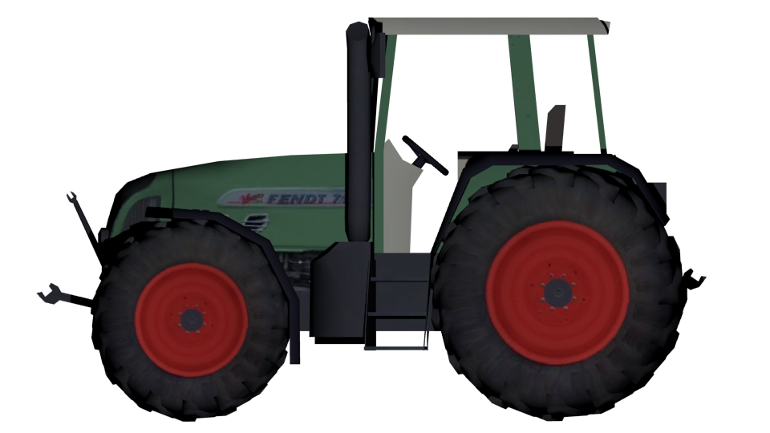

This is the beginning of the "Old Farming Simulator wiki". A place for general and in-depth technical information about Farming Simulator 2008 and 2009, modding tutorials and modding history.
This site is still work in progress, so do not expect any history or modding lessions yet. :P
